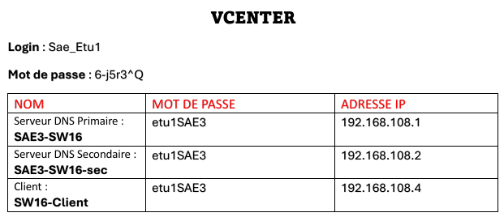
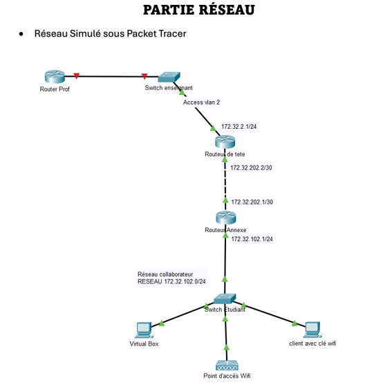

CONCEVOIR UN RÉSEAU INFORMATIQUE
Le but de ce projet était de concevoir et tester un nouveau réseau informatique permettant d'accéder à des
services et ressources d'entreprise. Pour le mener à bien, j'ai eu à ma disposition 3 machines virtuelles
sur le vCenter de l'IUT.
Il a fallu mettre en place respectivement un Active Directory, un serveur DNS Primaire et secondaire,
sécuriser au maximum le réseau avec la mise en place d'un DNSSEC afin de signer les enregistrements de ma
zone directe.
Il fallait aussi mettre en place du routage dynamique avec le protocole OSPFv2, un DHCP, une partie WEB
à héberger sur un de mes serveurs locaux et mettre en place du RDS.
Enfin, une partie Wifi durant laquelle il fallait créer un SSID pour les membres de l'entreprise et un
autre pour les visiteurs.

La topologie pour le test du bon fonctionnement du routage dynamique et du DHCP.

Si vous voulez en savoir plus en détail sur la réalisation de ce projet, les différents outils utilisés et
soucis rencontrés, n'hésitez pas à aller voir mon compte rendu complet de ce projet.
-
RT1 - Administrer les réseaux et l'internet
Configurer et dépanner le routage dynamique dans un réseau
Déployer des postes clients et des solutions virtualisées adaptées à une
situation donnée
Déployer des services réseaux avancés
Travailler en équipe pour développer ses compétences professionnelles
-
RT2 - Connecter les entreprises et les usagers
Mettre en place un accès distant sécurisé
Capacité à questionner un cahier des charges R&T
-
RT3 - Créer des outils et applications informatiques pour les R&T
Installer, administrer un système de gestion de données
Accéder à un ensemble de données depuis un site web
-
CYBER1 - Administrer un système d'information sécurisé
Mettre en oeuvre les outils fondamentaux de sécurisation d'une infrastructure
du réseau
Sécuriser les services